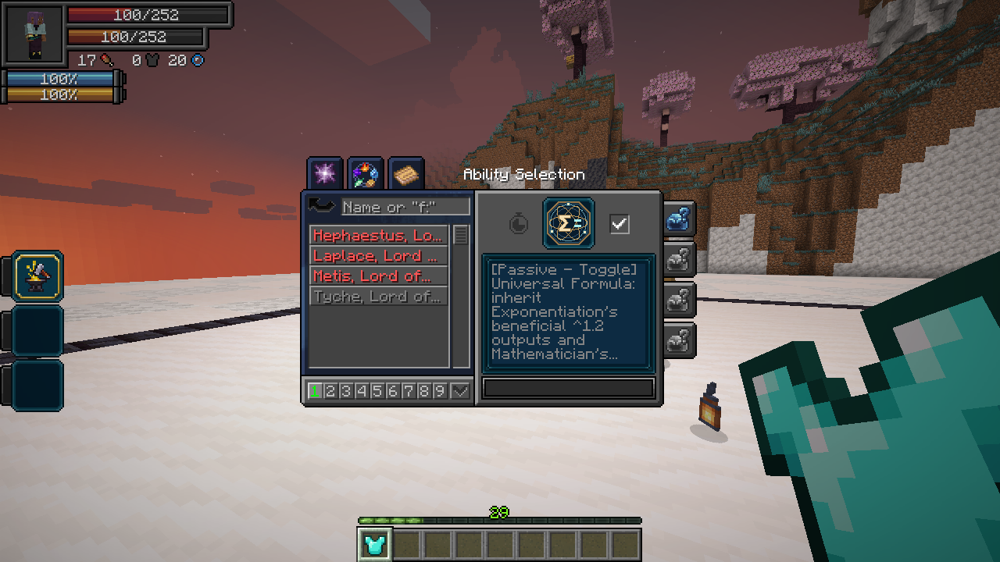
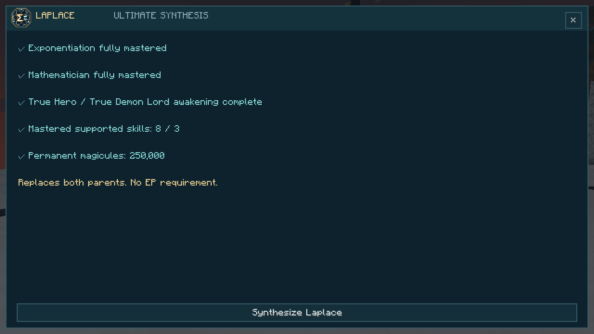
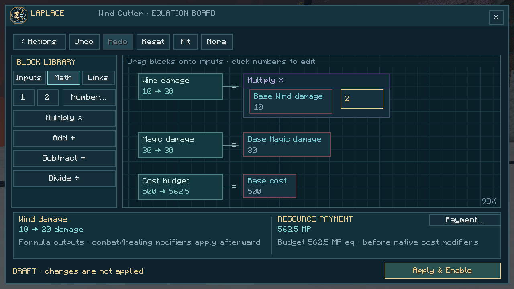
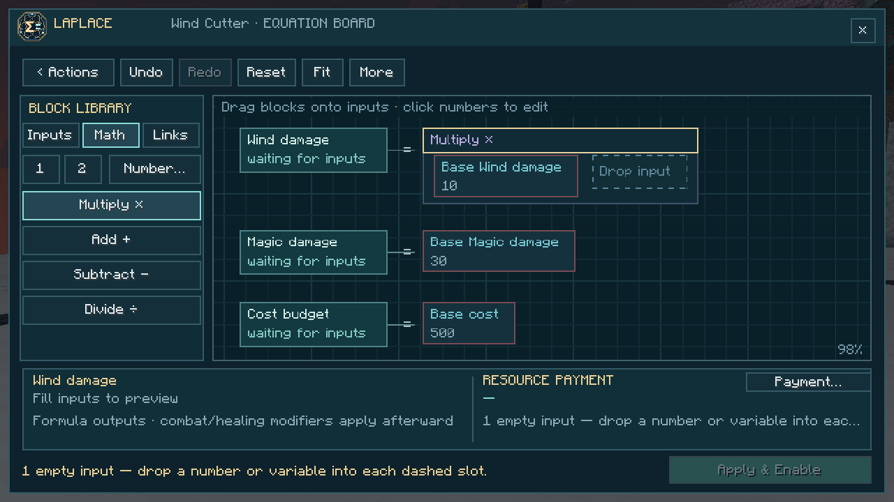
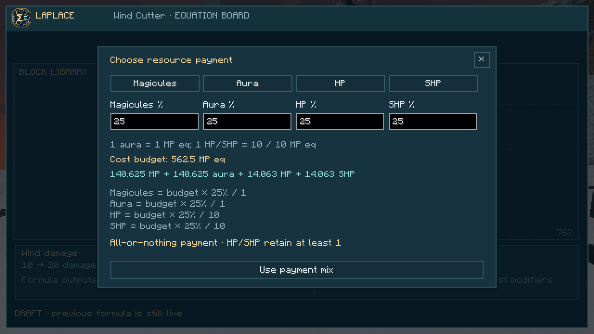
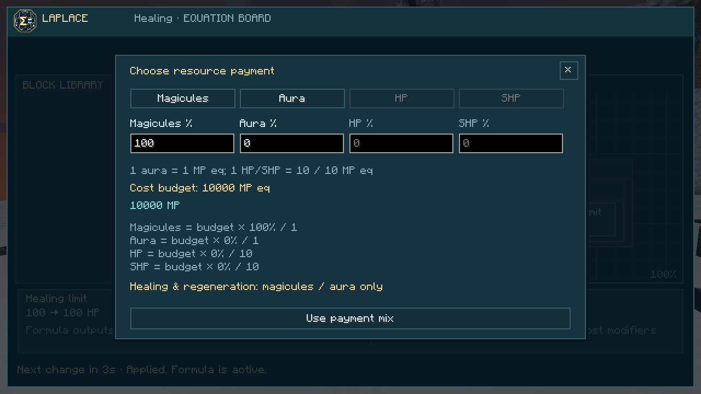
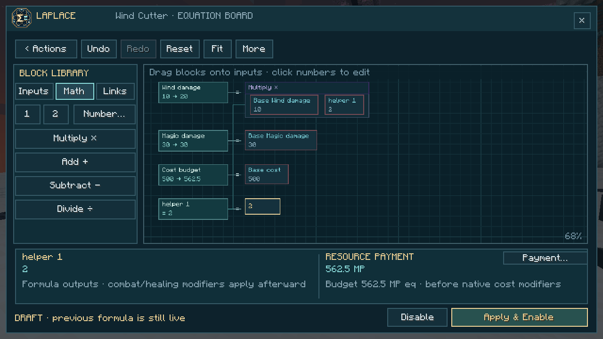

On this page
Obtaining
Owning either component reveals Laplace’s unfinished entry in Skills → Ultimate. Activate it, meet the listed requirements and confirm synthesis. Awakening bonuses apply before payment. Both components are replaced by learned, unmastered Laplace; their slots in all presets become Equation Editor. Missing a Unique component? The Archivist offers one paid lesson per player.

Universal Formula · Passive, Toggle
Inherits Exponentiation’s beneficial ^1.2 outputs and Mathematician’s configured passive benefits: calculating defenses, critical chance, learning/mastery gain, chant speed, Thought Acceleration and Analytical Appraisal. Appraisal stays on with the passive and uses your native analysis filter.
Movement, maximum aura/magicules, costs and cooldowns remain excluded from exponentiation. Other native exclusions and caps remain. Co-owning Exponentiation does not exponentiate an output twice. Turning this passive off also suspends edited formulas.
Damage type: none directly; enhanced attacks keep their original type.
Equation Editor · Active, Press
Open the editor from a native Tensura ability slot and choose an action. Search narrows the action list; scroll to see more. NATIVE means the original formula is running, LIVE means the saved edit is active, and PAUSED means Universal Formula is off.
The board shows named outputs on the left, connected to their formulas on the right. Each output compares its native and edited values. The lower panel shows the selected output and the resource bill. Payment… chooses how the cost budget is paid.
Example: boost Wind Cutter
- Open Wind Cutter and choose Math in the block library.
- Drag Multiply × onto Base Wind damage. The board keeps that value and creates a new empty input slot.
- Drag 2 into the empty slot. The preview immediately shows twice the Wind component and the resulting cost budget and payment; the separate Magic component stays unchanged.
- Choose Apply & Enable. This saves the action, enables its edit and turns Universal Formula on. Previously enabled actions resume too.

A DRAFT changes only the preview. Your previous applied formula keeps running until you apply the new one. Disable restores this action’s native formula and retains its saved equations and payment. It leaves other actions and Universal Formula on. Existing formulas from earlier versions load directly onto the board.
Board controls
| Control | Result |
|---|---|
| Inputs | Drag native constants or current player-state variables into an input |
| Math | Drag an operation onto a value; the old value becomes its first input |
| Links or a named output on the left | Drag a reference into another equation; its result updates dependents |
| Number… | Choose a custom number to place; click an existing number to edit it |
| Click a library block, then an input | Place without dragging |
| Drag between occupied inputs | Swap the two expressions |
| Shift-drag | Copy an expression into another input |
| Right-click an operation | Unwrap it while keeping its first input, or clear the input |
| Undo / Redo | Reverse or repeat a board edit; Ctrl+Z / Ctrl+Y also work |
| Reset | Restore this action’s native equations; undo remains available |
| Drag blank board space or scroll | Pan the board; Shift-scroll pans sideways |
| Ctrl-scroll / Fit | Zoom around the cursor / show the whole board |
| Payment… | Choose one resource or a percentage mix; preview the actual bill |
| More | Helpers, advanced text, cost balancing and control help |
On small screens, Blocks opens the library drawer. It closes while dragging so you can reach the board. Scroll within the library to find more blocks. Empty input slots and invalid equations block Apply and explain what needs attention. Arrow keys select inputs while the board is focused; Enter edits a number or places a selected library block, and Delete clears the input.

Resource payment
Choose Payment… beside the bill. Pick Magicules, Aura, HP or SHP, or enter percentages that total 100%. Use payment mix updates the draft; Apply & Enable commits both the formulas and payment. Closing the payment dialog cancels its unsaved changes. Existing profiles keep 100% magicule payment.
The Cost budget equation keeps the same balance rules. Its value is measured in magicule equivalents (MP eq), then divided between your chosen resources:
| Resource | Default exchange rate |
|---|---|
| Magicules | 1 point pays 1 MP eq |
| Aura | 1 point pays 1 MP eq |
| HP | 1 point pays 10 MP eq |
| SHP | 1 point pays 10 MP eq |
These rates are server-configurable. For example, a 200 MP eq bill split equally between aura and HP consumes 100 aura + 10 HP. Native casting cost modifiers and automatic-casting discounts apply before conversion; the board preview is before those modifiers.

Converted and mixed payments are all-or-nothing: every pool must cover its share. HP/SHP payments must leave at least 1 point and are direct costs, bypassing damage defenses and damage-triggered effects. Converted payment uses the caster’s pools, without spending staff EP. Magicule-only payment keeps Tensura’s normal staff behavior.
Healing and Self-Regeneration can use only magicules and/or aura. Healing prices actual missing-HP-clamped recovery, rounds the converted budget up to a whole MP equivalent before native discounts and requires the whole converted payment. Turn Self-Regeneration off before applying enabled equation/payment changes; disabling its edit remains available.

Linked equations
Changing a named output automatically changes equations that reference it. For example, Healing’s native equations are:
healing = base_healing
magicule_cost = max(base_cost, cost_per_hp * healing)
You could change its healing limit to:
healing = base_healing * (1 + missing_hp_fraction)
This reaches double the healing limit as your HP approaches zero. The target’s missing HP still caps actual recovery, and the bill follows the actual healing. missing_hp_fraction describes the caster, even when healing another target.
Self-Regeneration instead has separate one-second recovery pulses and native upkeep, normally every five seconds. Its cost is not a per-HP equation. Each action shows its own verified native equations.
Use More → Add helper equation to create up to four helper equations, named helper_1, helper_2, and so on. Refer to a helper from another equation to use its result. Removing a referenced helper requires updating its dependents.
helper_1 = 1 + missing_hp_fraction
healing = base_healing * helper_1
Available arithmetic: + - * / ^, parentheses, min(a,b), max(a,b), clamp(value,low,high) and abs(value). Powers require a nonnegative base and a constant exponent between 0 and 3. Fractions range from 0 to 1, where 1 means 100%. Inputs are captured before the action’s payment; a projectile retains its paid-for values in flight.

Supported actions
This initial catalogue exposes nine action/mode entries across eight native skills. Other actions are not editable yet.
| Native skill / mode | Editable aspects | Damage type |
|---|---|---|
| Self-Regeneration | HP per pulse; mastered SHP per pulse; cost budget and upkeep payment | None |
| Aspectual Fire | Fire and Magic damage per bolt; cost | Native Fire and Magic |
| Aspectual Wind Cutter | Wind and Magic damage per blade; cost | Native Wind and Magic |
| Aspectual Water Cutter — normal / mastered Repeat | Magic damage per blade; cost per use | Native Water Blade and Magic; primary Water damage is unchanged |
| Aspectual Healing | Healing limit; cost linked to actual healing | None |
| Aspectual Strength | Duration in seconds; cost | None |
| Aspectual Protection | Duration in seconds; cost | None |
| Aspectual Reinforcement | Duration in seconds; cost | None |
Native projectile counts, target selection, effect levels, cast times, cooldowns, defenses, healing suppression and recovery caps remain. Previews show values before Universal Formula and other modifiers. Player-state preview inputs refresh from the server while the board is open; actions capture live state when cast. Refreshing does not clear your draft, selection or drag.
Balance
| Rule | Default |
|---|---|
| Enabled action/mode edits | 3; 4 mastered |
| Maximum combined output per action | 3× native; 4× mastered |
| Largest cost discount | 25% |
| Stronger-output minimum bill | Native bill × [1 + 2 × (output ratio − 1)²] |
| Example minimum bills | 2× combined output → 3× cost; 3× → 9×; 4× → 19× |
| Between saved changes | 5 seconds |
| Helper equations | 4 per action |
For actions with multiple outputs, the output ratio compares their combined total. Fixed-cost actions and regeneration upkeep price the strongest possible state of the formula, preventing a cheap activation followed by stronger unpaid pulses. Healing prices the actual missing-HP-clamped recovery; magicule-only payment retains native proportional healing on a shortfall, while converted/mixed payment requires the full bill.
The minimum bill is shown separately and enforced even if the cost equation requests less. More → Balance cost formula fills a suitable cost equation; the price floor applies automatically when you use Apply & Enable. Finish casting before saving changes. Turn Self-Regeneration off before applying enabled changes to it. Circular dependencies, unknown inputs, negative output, unsafe divisors and excessively large values are rejected with an explanation. Formula edits cannot add new effect types, change inventory or rewrite progression. Payment changes consumption only; it cannot generate resources. Invalid saved formulas fall back entirely to the native action.
Damage type: no direct attack; edited attacks keep their native damage type.